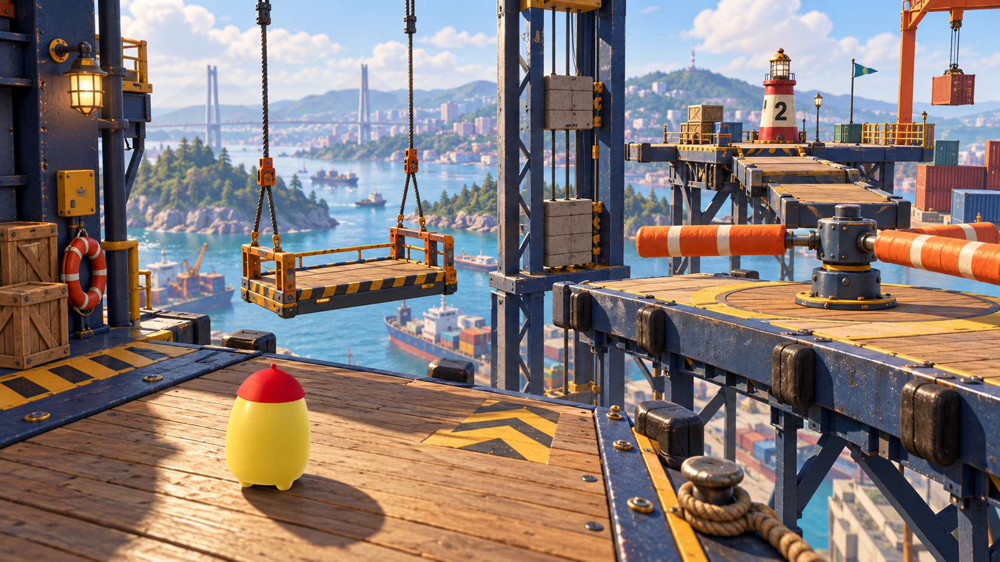

Game Opus · локальная версия · 3 октября 2026
Катера, высотная верфь
и городская живность
Переделаны модели, материалы, конструкции и движения. Вертикальный обзор в скилл-тесте и прятках согласован с набережной. Ниже — кадры игры и стенда, который использует те же игровые модели.
Проверка типов, сборка и 784 теста прошли. Рабочий сервер не обновлялся; реальные профили игроков не изменялись.
Высотная верфь
Палубы из досок на стальных кассетах, замкнутые фермы и подвесы. Движущиеся площадки получили каретки и шкивы; лифт — направляющие и противовес. Внизу расположен ремонтный порт. Восемь участков и физические поверхности сохранены.
 Игровой старт · финальная сборка, высокое качество. Мышь вверх поднимает взгляд; у пределов нет задержки обратного движения.
Игровой старт · финальная сборка, высокое качество. Мышь вверх поднимает взгляд; у пределов нет задержки обратного движения.
Визуальный ориентир ImageGen
Этот концепт использовался для выбора конструкции и материалов. Изображение ниже — референс, а не кадр игры.

Что проверено
- 784 автоматических теста, TypeScript и сборка.
- Ввод WASD и три прыжка до первого чекпоинта; возврат к нему после падения.
- Направление вертикального обзора и немедленный разворот у его пределов.
- Газ, торможение и задний ход катера; прохождение ворот.
- Загрузка 15 животных и четырёх катеров под production CSP; действие E вызывает мурлыканье.
- Защита от поглаживания во время прыжка, включая устаревшее нажатие E.
Ввод проверялся автоматизацией через штатный обработчик клавиш/мыши в локальном браузере. Ручной pointer lock, прохождение всей полосы компанией и нагрузка на рабочем сервере этим прогоном не подтверждены.
Подробный отчёт и доказательства · Покрутить игровые модели